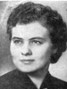
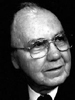
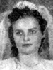

Home
Histories
Charts
Photos
Maps
Restricted
News
Info
Contact
|
  | Anders Peter Anderson 
and Martha Ann Lovell  | ----> |
 
| Joseph Elmer Anderson 11 May 1894 - 5 Feb. 1983
and Laura Arlene Trumbo 21 Nov. 1898 - 16 July 1923
Married 1 Dec. 1916
He also married Lorena Ridges Wood 20 Jun 1928 |
|
|
|
Some photos of the three children. (NOTE: This page contains 11 photos and may be slow in loading, depending on your connection speed and the responsiveness of the server.)
|  |
LaPriel Arlene Anderson
The 1st child of Joseph Elmer and Laura Arlene Anderson
|
|  |
Myron Elmer Anderson
19 Nov. 1920 - 17 Aug. 2007
The 2nd child of Joseph Elmer and Laura Arlene Anderson
|
|  |
Clora Anderson
24 Oct. 1922 - 22 Mar. 2006
The 3rd child of Joseph Elmer and Laura Arlene Anderson
|
|
Back to Jacobson Family History web pages.
|